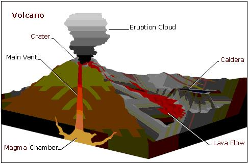
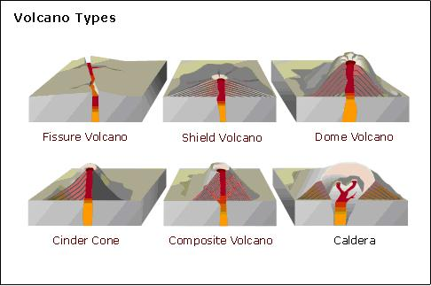
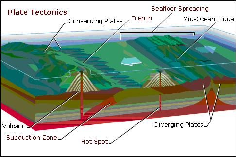

VOLCANO
|
Volcanoes |
|
Volcanoes are a lot like bottles of champagne. At rest, they
really don't make too much noise. But put the contents of a volcano or a
champagne bottle under pressure, and the situation changes. Shaking a
carbonated beverage dramatically increases the pressure in the bottle.
Likewise, when the molten rock inside a volcano is under great pressure
with no exit, a powerful force builds up inside the volcano. If the amount
of “carbonation” in a volcano’s magma is high, the inevitable release
leads to massive explosions. The amount of gas inside magma—molten rock—is one of the most
important indicators determining how violent an eruption will be. The
viscosity—thickness—of magma is another important factor. Under ground,
gases remain suspended in the magma under pressure, but when magma rises
to the lower pressures of the surface, the gases expand. Volcanoes with
less gaseous and more fluid magma usually have less violent eruptions
because the small amount of gas easily escapes from the lava into the
air. Thick,
sticky magma, on the other hand, slows the escape of gases and may also
block a volcano’s main vent. When the gases are finally released, they
burst out of the lava in furious and turbulent blasts. These explosive
eruptions are characterized by large clouds of flying rock particles,
rather than lava flows. |
|
Volcanic Products |
|
Volcanoes emit a variety of substances, with differing degrees
of force. These substances are lava, pyroclastic material, ash, and
gases. Lava is magma that reaches the surface. This liquefied rock is many times hotter than boiling water and glows bright yellow, orange, and red. Lava may erupt in explosive bursts, like giant fountains, or flow gently down the slopes of a mountain. Lava can exit a volcano from the top vent or emerge from vents along the sides. Except for the molten rock that lands back inside the main crater to continue bubbling, all lava eventually cools and solidifies. Some lava cools quickly, on or near the volcano, but more fluid lava may travel for miles before slowly congealing into rock. Over time, solidified lava from different eruptions steadily increases the volcano’s size and height.
Together with rocks blown from the sides of a
volcano, the entire collection of ejected material becomes a hot,
fast-moving cloud of rock and ash. These flows can travel at great speed
down the flanks of a volcano and into surrounding areas, causing extensive
destruction. In 1902 the eruption of Montagne Pelée, on the Like lava, pyroclastic material raining down on a volcano
eventually compacts into solid layers that build up the volcano’s bulk.
Some eruptions actually reduce the height of a volcano, because they are
so powerful that they literally blow the top of the volcano off. In 1883
the cataclysmic explosion of Krakatau in Volcanoes often spew great quantities of ash many kilometers
into the air. The fine ash can drift for thousands of kilometers, falling
on distant lands, yet the smallest particles of dust may remain suspended
in the atmosphere for months. The uprush of gas and vapors from the
Steam and other gases such as carbon dioxide, hydrogen, carbon
monoxide, and sulfur dioxide continuously escape from the surface of lava.
Volcanic areas can emit harmful gases in immense quantities. In 1986 a
volcanic lake in northern |
|
 |
| Volcanic Landforms |
|
The shapes of volcanoes vary based on the types of particles
thrown from the volcano during eruptions. The beautifully symmetrical
cones of Fuji-san in Volcanoes that consist predominantly of pyroclastic materials
are called cinder cones. These mountains, such as Under certain circumstances, instead of issuing from a central
vent, lava pours out along cracks, or fissures, that may extend for
several kilometers across the land surface. Flows of this sort have
created thick sheets of basalt covering thousands of square kilometers.
The Deccan Plateau in Some enormous, craterlike basins called calderas, at the top
of long-dormant or extinct volcanoes, form when a massive explosion forces
the upper part of a volcano to collapse. Some of these calderas eventually
fill with water, forming deep lakes, such as the picturesque Crater Lake
in the |
|
 |
|
Volcanoes can be active, dormant, or
extinct. Active
volcanoes have erupted in a relatively recent period. There are more than
500 active volcanoes on continents or islands; thousands more exist under
the oceans. Many active volcanoes are in the Ring of Fire, a zone of
seismic and volcanic activity that encircles the Dormant volcanoes are those that have not erupted for many
years, but have the potential to erupt again. The eruption that follows
prolonged dormancy is usually violent, as was the 1980 explosion of Mount
Saint Helens in the Extinct volcanoes have not erupted in thousands of years and
show no signs of doing so in the future. Mount Kenya, the second highest
mountain in |
|
 |